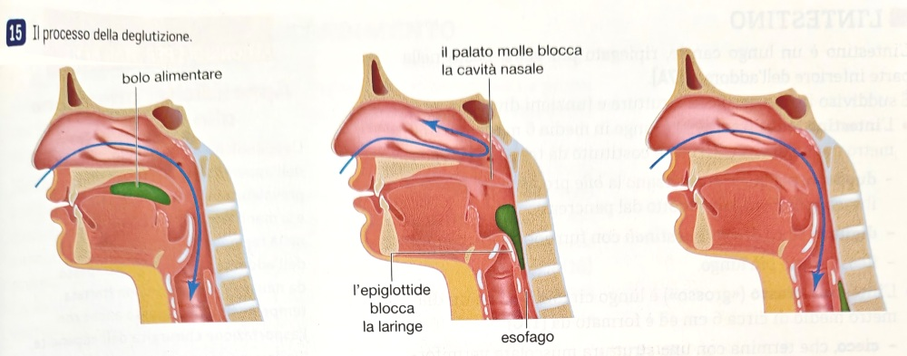
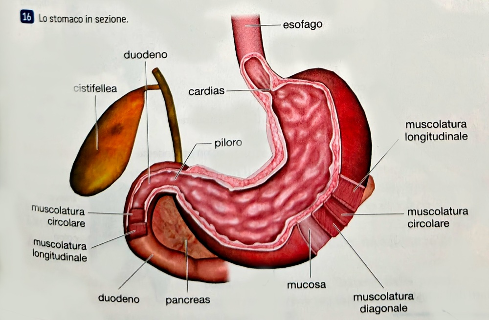
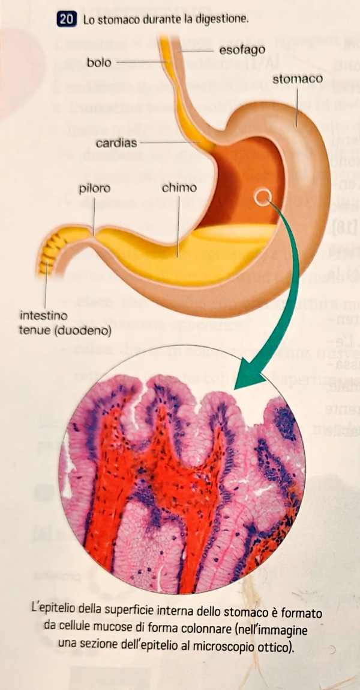
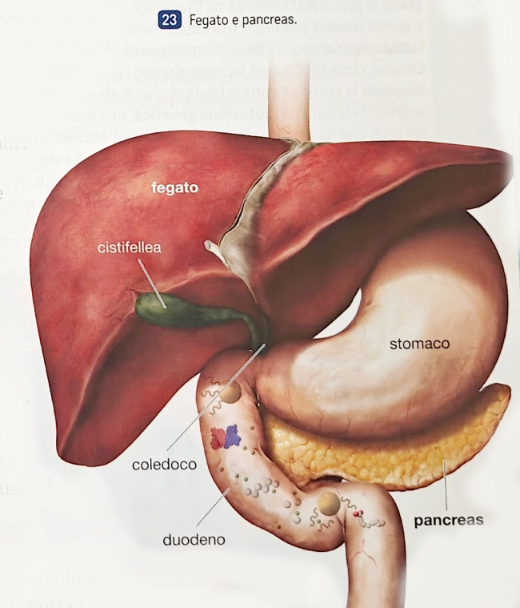
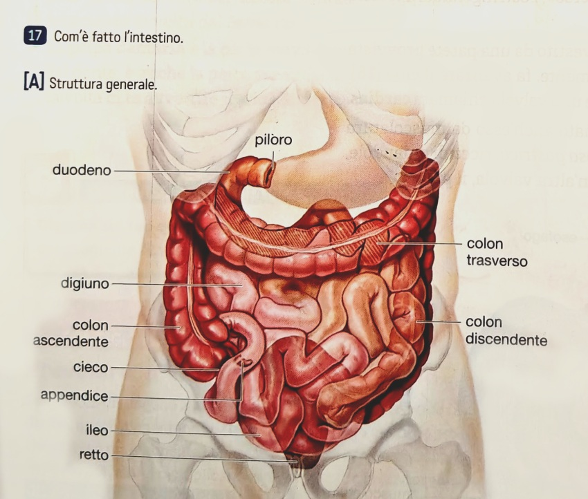

Il nostro corpo ricava dagli alimenti sostanze chiamate nutrienti (o principi nutritivi), classificate in due grandi categorie: macronutrienti e micronutrienti.
Dal punto di vista chimico, gran parte dei nutrienti sono macromolecole: grosse molecole chiamate polimeri, formate da tanti monomeri (piccole molecole unite da legami covalenti, come «mattoncini»). La digestione serve proprio a smontare i polimeri in monomeri per permetterne l'assorbimento.
Principale fonte di energia. I più importanti polisaccaridi sono:
Comprendono trigliceridi, fosfolipidi, steroli (colesterolo) e cere. Non si sciolgono in acqua. Funzioni: riserva energetica, isolamento termico, ormoni, membrane cellulari (fosfolipidi).
Macromolecole formate da amminoacidi (20 tipi diversi, migliaia di combinazioni). Funzioni principali:
Sostanze organiche regolatrici, necessarie in piccolissime quantità (pochi mg/giorno). Si dividono in:
Sostanze inorganiche con funzione regolatrice e plastica. Esempi: il calcio serve per la contrazione muscolare e per la costruzione delle ossa; il ferro è presente nell'emoglobina, la proteina che trasporta l'ossigeno nel sangue. Altri minerali importanti: potassio, sodio, magnesio.
È formato da due componenti: il tubo digerente (un canale lungo 7,5–8 m) e le ghiandole che secernono le sostanze necessarie alla trasformazione del cibo.
Delimitata da labbra, guance, palato e pavimento. Contiene la lingua (muscolo volontario con le papille gustative), le ghiandole salivari (parotide, sottolinguale, sottomandibolare) e due arcate dentali.
I denti hanno funzioni diverse: incisivi (tagliano), canini (strappano), premolari e molari (schiacciano e triturano). Dentatura permanente: 32 denti, 16 per arcata.
La faringe è un breve condotto per il passaggio sia dell'aria sia del cibo. Durante la deglutizione, l'epiglottide chiude la laringe per impedire al cibo di entrare nelle vie respiratorie.
L'esofago è un canale lungo circa 20 cm con muscoli lisci che, contraendosi ritmicamente (peristalsi), fanno avanzare il cibo. Comunica con lo stomaco tramite la valvola cardias.
Sacca di muscolatura liscia rivestita internamente dalla mucosa gastrica, ricca di ghiandole che producono il succo gastrico. Le pareti producono muco protettivo contro l'azione corrosiva dell'acido cloridrico. Lo stomaco comunica con l'intestino attraverso il piloro.
Lo stomaco ha anche una limitata funzione di assorbimento: molecole piccole come acqua, glucosio e alcol passano direttamente nel sangue.
È il tratto dove si completa la digestione e avviene la maggior parte dell'assorbimento. Nel duodeno arrivano la bile (dal fegato), il succo pancreatico (dal pancreas) e il succo enterico (dalle ghiandole intestinali).
L'assorbimento avviene soprattutto nel digiuno, grazie ai villi intestinali — espansioni della parete che aumentano enormemente la superficie assorbente. I villi sono a loro volta dotati di microvilli.
Formato da: cieco (con l'appendice), colon (ascendente, trasverso, discendente) e retto che termina con l'ano.
Non avviene digestione. Il crasso assorbe acqua, sali minerali e vitamine residue. Le sostanze non assorbite formano le feci, eliminate con la defecazione.
L'intero intestino è avvolto dal peritoneo, una membrana protettiva.
Produce la bile (0,5–1 litro/giorno), immagazzinata nella cistifellea e riversata nel duodeno tramite il coledoco. La bile emulsiona i grassi, riducendoli in goccioline attaccabili dagli enzimi.
Altre funzioni fondamentali:
La sua parte esocrina produce il succo pancreatico, che si riversa nel duodeno. Contiene numerosi enzimi digestivi e bicarbonato di sodio, una sostanza basica che neutralizza l'acidità del chimo, favorendo l'azione degli enzimi intestinali.
Seguiamo il percorso di un boccone di cibo attraverso l'apparato digerente, passo dopo passo.
I denti triturano il cibo; la saliva lo lubrifica e inizia la digestione chimica.
PTIALINA LISOZIMAIl lisozima ha proprietà battericide. Il cibo masticato e mescolato con la saliva forma il bolo alimentare.
Il bolo attraversa la faringe (l'epiglottide chiude la laringe) e percorre l'esofago grazie alla peristalsi — contrazioni ritmiche dei muscoli lisci. La valvola cardias si apre per farlo entrare nello stomaco.

Il succo gastrico (acido cloridrico + enzimi) attacca il bolo. L'HCl rende acido l'ambiente e uccide i microbi.
PEPSINALe pareti producono muco per proteggersi dall'acido. Il risultato è un impasto denso e acido chiamato chimo, che attraversa il piloro verso l'intestino tenue.

Nel duodeno il chimo incontra tre succhi digestivi:
BILE SUCCO PANCREATICO SUCCO ENTERICO

I nutrienti ormai scomposti (amminoacidi, acidi grassi, zuccheri semplici) attraversano la parete dell'intestino tenue — soprattutto nel digiuno — ed entrano nel circolo sanguigno.
La superficie è enormemente ampliata dai villi intestinali e dai microvilli.

Nessuna digestione. Il crasso assorbe acqua, sali minerali e vitamine residue. Ciò che resta diventa feci.
Le feci vengono eliminate attraverso il retto e l'ano.